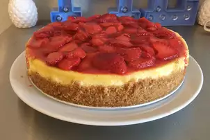

Cheesecake

Description
I first made this cheesecake for dinner guests about two years ago. I haven't stopped getting requests for it since. Though it's made with extremely rich ingredients, the cake turns out wonderfully light. I never liked cheesecake much before I tried this recipe - but boy, have I been reformed! It's quite easy to make too!
Ingredients
- 1 cup butter, room temperature
- 4 (8 ounce) packages cream cheese, softened
- 1 1/2 cup sugar
- 5 eggs, room temperature
- 2 cup heavy cream
- 1 1/2 tablespoon cornstarch
- 1 teaspoon vanilla extract
Steps
- Preheat oven to 350 degrees F (175 degrees C). Grease and flour a 9 inch springform pan.
- Using an electric mixer, beat the butter, cream cheese and sugar until light and fluffy. Beat in the eggs, one at a time, until blended. Stir in the heavy cream, cornstarch and vanilla.
- Wrap the bottom of the springform pan with aluminum foil. Line a roasting pan with a damp kitchen towel. Place cheesecake pan on towel, inside roasting pan, and place roasting pan on oven rack. Fill roasting pan with boiling water to reach halfway up the sides of the cheesecake pan. Bake for 60 minutes, or until center of the cheesecake is just firm. Cool at room temperature for 1 hour. Refrigerate until set before removing from pan.